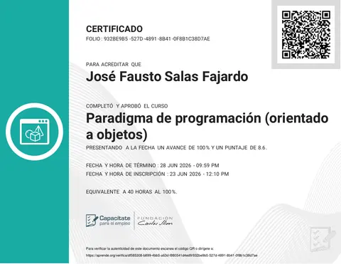
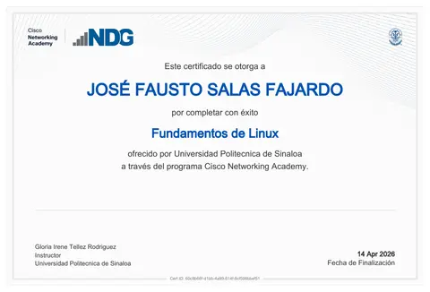
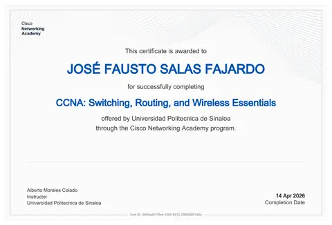
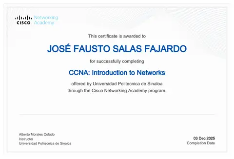
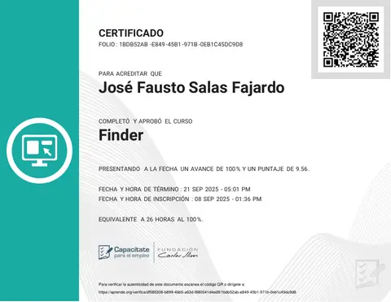

Desarrollo web
Estructura, estilos y comportamiento de interfaces web, incluyendo componentes con React.
HTML5CSS3JavaScriptReact
Portafolio académico · Tecnologías de la Información
José Fausto Salas Fajardo
Estudiante de TI enfocado en desarrollo web y software.
Aprendiendo a convertir ideas en experiencias digitales claras, útiles y accesibles. Este espacio reúne mi formación y algunos proyectos académicos.
Sobre mí01Un poco sobre mí
Soy estudiante de Ingeniería en Tecnologías de la Información e Innovación Digital en la Universidad Politécnica de Sinaloa (UPSIN).
Me interesa el desarrollo web y de software, especialmente la forma en que una interfaz bien organizada puede hacer que un sistema sea más sencillo de utilizar. Estoy construyendo mis conocimientos mediante ejercicios y proyectos académicos, con interés en seguir aprendiendo buenas prácticas de programación, diseño responsivo y accesibilidad.
02Herramientas y fundamentos
Tecnologías y áreas relacionadas con mi formación actual. La lista irá creciendo con la práctica.
Estructura, estilos y comportamiento de interfaces web, incluyendo componentes con React.
Programación orientada a objetos y resolución de problemas en distintos lenguajes.
Práctica académica con consultas y gestión de datos relacionales.
Fundamentos de redes, conmutación, enrutamiento y Linux, respaldados por cursos de Cisco Networking Academy.
Entornos de desarrollo, control de versiones y herramientas de proyecto.
Prototipado de interfaces y diseño visual.
Las habilidades reflejan mi formación y práctica académica; no representan certificaciones profesionales.
03Trabajo seleccionado
Proyectos en los que he trabajado durante mi formación.
Prototipo de una interfaz para registrar y consultar reportes sobre infraestructura universitaria, con vistas para alumnos y administradores. El objetivo es organizar la información y facilitar el seguimiento de los reportes.
Limitaciones: estado local, autenticación simulada y sin persistencia real de datos.
Proyecto académico enfocado en la propuesta de una tienda en línea. La interfaz busca presentar productos de manera ordenada y ofrecer una experiencia de navegación sencilla.
Nota: las ilustraciones son representaciones visuales del proyecto, no capturas de una aplicación publicada.
04Mi recorrido
Mi etapa actual está centrada en fortalecer las bases y construir proyectos que me permitan aplicar lo aprendido.
EN CURSO
Universidad Politécnica de Sinaloa (UPSIN)
Formación en programación, desarrollo de software, bases de datos y fundamentos de sistemas de información.
05Cursos acreditados
Cursos de redes, sistemas y programación con constancia en PDF.

Capacítate para el empleo · Fundación Carlos Slim

Cisco Networking Academy · Universidad Politécnica de Sinaloa

Cisco Networking Academy · Universidad Politécnica de Sinaloa

Cisco Networking Academy · Universidad Politécnica de Sinaloa

Capacítate para el empleo · Fundación Carlos Slim
06Currículum
Resumen de mi formación, habilidades y proyectos académicos en una página.
07Personal
08Hablemos
Si quieres conversar sobre mis proyectos académicos o compartir ideas relacionadas con tecnología, puedes escribirme por correo.
Enviar correo